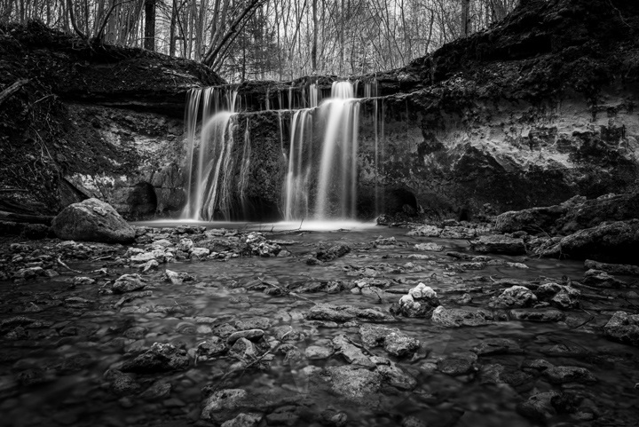
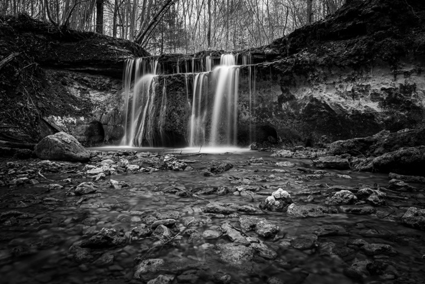

When I photograph wild horses, I always keep one principle in mind: respect the subject.
- I scout quietly from a distance before shooting.
- I use longer focal lengths (like 120mm+) to avoid approaching too close.
- I move slowly and deliberately — never running, never surprising.
- I observe body language. If the herd seems agitated, I stop immediately.
- I often spend hours without taking a shot, just learning their patterns.
Photographing wild horses is not just about the image. It’s about trust, timing, and letting their rhythm lead mine. This patience builds honesty in my work.
– Felix I. Flores